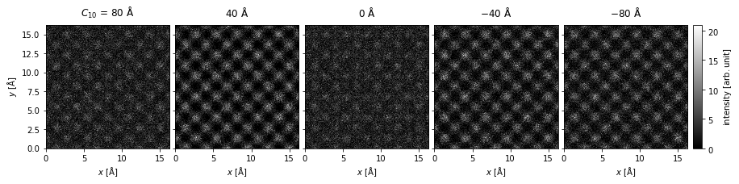
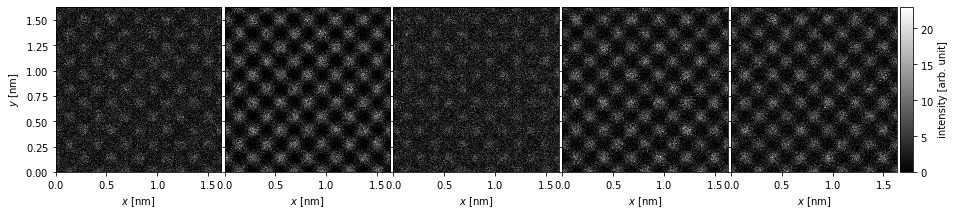
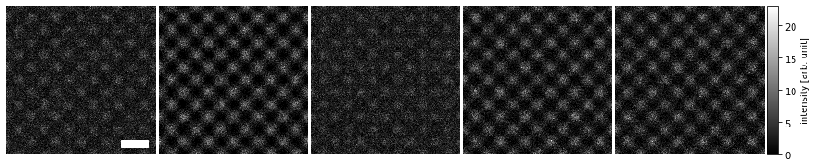
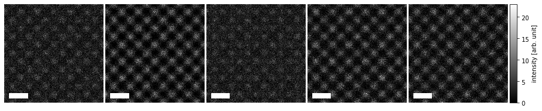
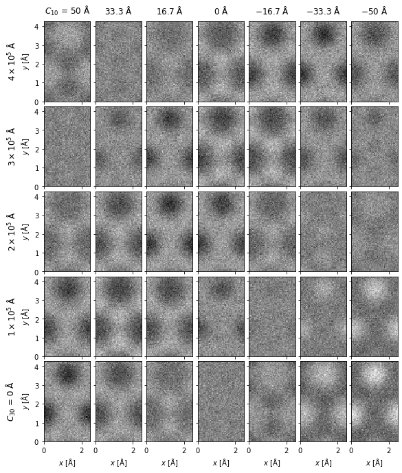
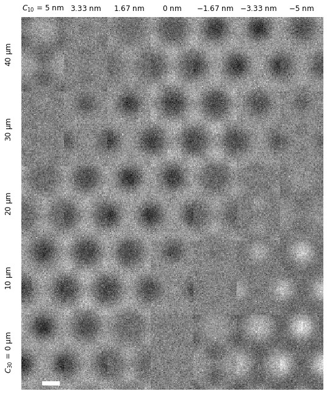
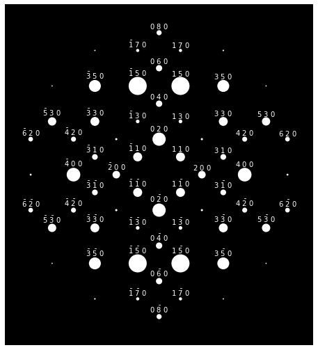
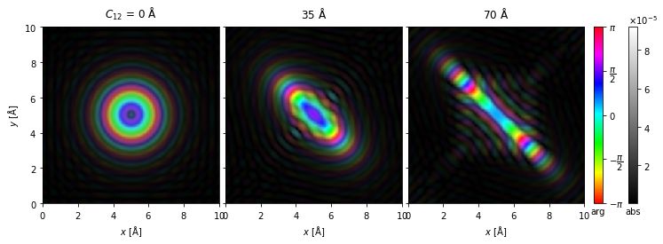

Visualizations#
Visualizing the results is an integral part of understanding the output of a scattering simulation. The abTEM visualization module wraps the matplotlib library to help produce typical visualizations needed when simulating transmission electron microscopy. In this tutorial, we cover how to customize the standard abTEM outputs to obtain publication-ready visualizations. We note that not every customization is possible within our framework; it may sometimes be more practical to create your own visualization from scratch.
See also
This tutorial only covers static visualizations. The abTEM visualization module also features animated and interactive visualizations, see the respective examples for more information.
Customizing an image ensemble#
The abTEM visualization module is based on the concept of ensembles of similar measurements. Given an object with one or more ensemble axes, abTEM can create an “exploded” plot when you set explode=True. The exploded plot is a 1D or 2D grid of images or line plots, where each subplot represents a member of the ensemble.
As an example, we create HRTEM images for silicon \(\{100\}\) with a single ensemble dimension representing different values of defocus.
[########################################] | 100% Completed | 2.87 ss
We create a visualization using the .show method and set explode=True to create a grid plot. We set common_color_scale=True to show all the images on a single color scale; if this is set to False each image is scaled independently. We further set cbar=True to included a colorbar and cmap="gray" to show the images using a grayscale colormap (see the matplotlib documentation for a full list).
Note how each subplot is automatically labeled based on the defocus ensemble axis.
visualization = measurements.show(
explode=True,
common_color_scale=True,
figsize=(14, 5),
cbar=True,
cmap="gray",
)

The .show method produces a MeasurementVisualization object, which wraps a matplotlib figure. Its specific subtype will depend on the type of measurement used to create the visualization – in this case, we obtain a MeasurementVisualization2D object.
object.__repr__(visualization.get_figure())
'<matplotlib.figure.Figure object at 0x7f074ba5cb10>'
The plots are laid out using the AxesGrid class.
visualization.axes
<abtem.visualize.axes_grid.AxesGrid at 0x7f07baa98810>
We can convert the AxesGrid to a numpy array of matplotlib Axes as below. The numpy array is always 2D, hence in this case it is a (3,1) array, where the first dimension indexes columns.
np.array(visualization.axes)
array([[<Axes: xlabel='$x$ [$\\mathrm{\\AA}$]', ylabel='$y$ [$\\mathrm{\\AA}$]'>],
[<Axes: xlabel='$x$ [$\\mathrm{\\AA}$]', ylabel='$y$ [$\\mathrm{\\AA}$]'>],
[<Axes: xlabel='$x$ [$\\mathrm{\\AA}$]', ylabel='$y$ [$\\mathrm{\\AA}$]'>],
[<Axes: xlabel='$x$ [$\\mathrm{\\AA}$]', ylabel='$y$ [$\\mathrm{\\AA}$]'>],
[<Axes: xlabel='$x$ [$\\mathrm{\\AA}$]', ylabel='$y$ [$\\mathrm{\\AA}$]'>]],
dtype=object)
Each Axes can be adjusted using the methods from matplotlib, but the abTEM MeasurementVisualization implements some methods to assist in converting the standard figure to something more apporpriate for a publication.
We can adjust the vertical and horisontal spacing betwen images using the .set_axes_padding method; in our case we only need to adjust the horizontal spacing. The width of the colorbar can be adjusted using the .set_cbar_size method, and finally we can adjust the left and right padding of the colorbar using the .set_cbar_padding method.
visualization.axes.set_sizes(padding = .1)
#visualization.set_cbar_size(0.075)
#visualization.set_cbar_padding((0.05, 0.0))
visualization.get_figure()
We can change the units of the titles using the .set_column_titles method, the units of the \(x\) and \(y\)-axis can also be changed by using the set_x_units or set_y_units methods.
visualization.set_column_titles(units="nm")
visualization.set_xunits("nm")
visualization.set_yunits("nm")
visualization.fig
---------------------------------------------------------------------------
TypeError Traceback (most recent call last)
Cell In[18], line 1
----> 1 visualization.set_column_titles(units="nm")
2 visualization.set_xunits("nm")
3 visualization.set_yunits("nm")
TypeError: Visualization.set_column_titles() missing 1 required positional argument: 'titles'
We can also simply remove the titles by setting them to an empty string.
visualization.set_column_titles(titles="")
visualization.fig

The axes ticks and labels can be removed using the axis_off method, and we can add a scalebar (based on the matplotlib object AnchoredSizeBar) to preserve a description of the scale.
visualization.axis_off(spines=False)
visualization.set_scalebars(size=3, color="w")
visualization.fig

The scalebars placement within each panel can be controlled via the loc keyword (see matplotlib documentation), and within the ensamble with the panel_loc keyword (with ‘all’ showing the scale bar in each plot).
visualization.axis_off(spines=False)
visualization.set_scalebars(size=3, color="w", loc="lower left", panel_loc="all")
visualization.fig

Finally, we can label each image using the same metadata used for the standard titles to add annotations.
visualization.set_panel_labels(
labels="metadata", frameon=False, prop={"fontsize": 14, "color": "w"}
)
visualization.fig
2D ensemble of images#
In the next example, we demonstrate a 2D grid of graphene images for different values of defocus and spherical aberrations.
[########################################] | 100% Completed | 517.82 ms
We create a 2D grid of images on the same color scale by setting explode=True and common_color_scale=True. Note the automatic labeling of the rows and columns.
visualization = images.show(
explode=True, figsize=(10, 10), common_color_scale=True, cmap="gray"
)

We can remove the spacing between the images using the set_axes_padding method. The axes desciptions can be removed using the axis_off method, and we can instead add a scalebar using the set_scalebar method.
visualization.set_axes_padding([0.0, 0.0])
visualization.axis_off(spines=False)
visualization.set_scalebars(size=1, color="w")
We can further change the units displayed in the titles using the set_row_titles and set_column_titles methods.
visualization.set_row_titles(units="um")
visualization.set_column_titles(units="nm")
visualization.fig

Diffraction spots#
The diffraction intensities calculated using a multislice simulation are concentrated in single pixels, which does not naturally make for nice visualizations. Using the indexing algorithm, we can get the positions and intensities of the diffraction spots, which can be more helpfully visualized as disks. In the example below, we create a typical textbook image of electron diffraction patterns for SiO2 zeolite, where each diffraction spot is a white disk on a black background.
[########################################] | 100% Completed | 3.52 ss
We create the visualization cropping the maximum scattering angle to \(10 \ \mathrm{mrad}\), blocking the direct beam, and setting the colormap to solid white.
visualization = (
spots.crop(10)
.block_direct()
.show(
figsize=(8, 8),
scale=0.1,
cmap="w",
display=False,
)
)
We can access our matplotlib Axes and apply the method for setting the background color as below.
visualization.axes[0, 0].set_facecolor("k")
To avoid too much visual clutter, we can set a threshold for which diffraction spots are labelled with their Miller indices to an intensity of \(0.0003\) (the full intensity including the direct beam should sum to \(1.0\)).
visualization.axis_off(spines=False)
visualization.set_miller_index_annotations(0.0003, size=10, color="w")
visualization.fig

Domain coloring#
For complex entities, phase and amplitude can be displayed simultaneously using a technique called domain coloring.
[########################################] | 100% Completed | 310.94 ms
By default, we map the phase to colors using the “HSLuv” color mapping; however, the more saturated “hsv”/”hsl” mapping is also available by setting cmap=hsv.
visualization = probes.show(
explode=True, figsize=(12, 6), cbar=True, common_color_scale=True, cmap="hsv"
)
